Overview
This report presents a comprehensive comparison of machine learning (ML) force fields against density functional theory (DFT) anharmonic calculations for IR spectroscopy. All spectra include anharmonic fundamentals, overtones, and combination bands. Broadening was applied using Gaussian convolution with 8 cm^-1 FWHM.
Combined Analysis: All Methods
Direct comparison of all ML methods against the DFT baseline in a single view.
Combined IR Spectrum (Fundamentals)
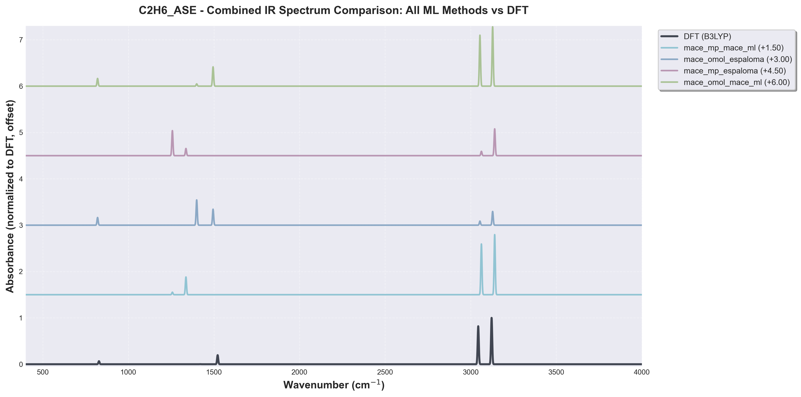
Extended IR Spectrum (400-8000 cm⁻¹, includes overtones)
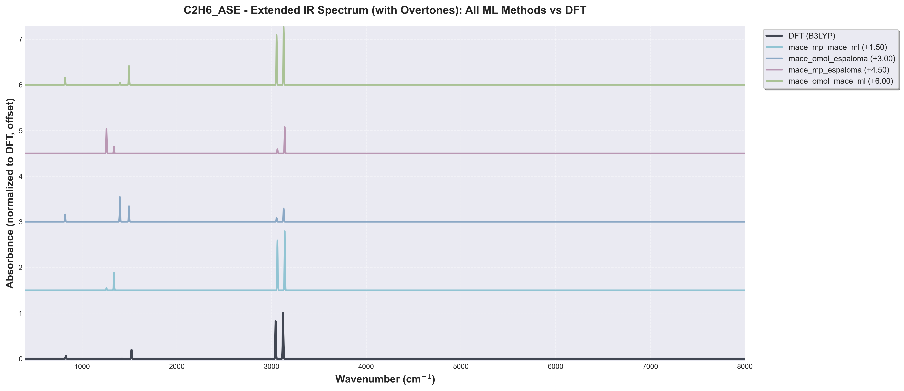
Extended frequency range shows fundamental modes, overtones, and combination bands.
Combined Regression Analysis
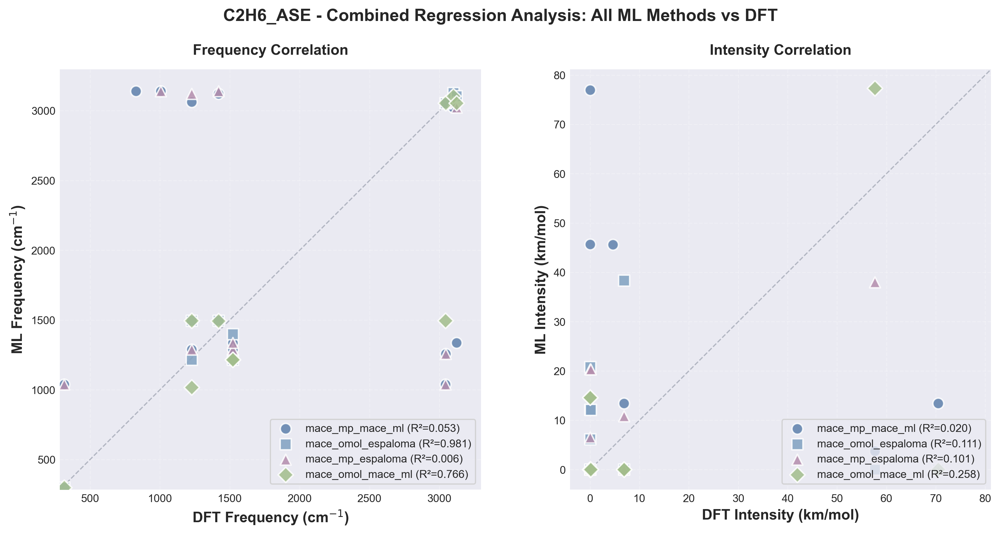
Note: The combined plots allow for quick visual comparison of how different ML methods perform relative to each other and the DFT reference. R² values of "N/A" indicate insufficient data points (N<3) for statistical correlation.
Mode Matching Analysis
Vibrational modes can change order between DFT and ML calculations. Mode matching via normal mode overlap ensures we compare the correct physical modes rather than just matching by mode number.
Mode Overlap: MACE MP ESPALOMA vs B3LYP_6-31GDP
Heatmap shows the overlap (dot product) between vibrational modes. Red = high overlap (modes match), Blue = weak overlap, White = no overlap (modes are orthogonal).
Mode Overlap: MACE MP MACE ML vs B3LYP_6-31GDP
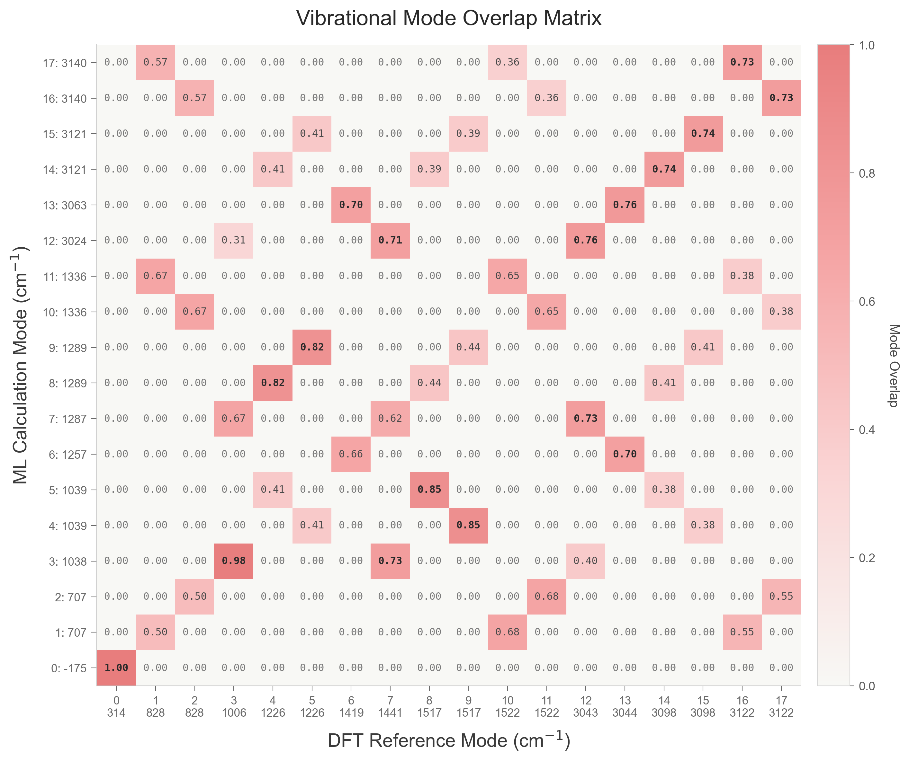
Heatmap shows the overlap (dot product) between vibrational modes. Red = high overlap (modes match), Blue = weak overlap, White = no overlap (modes are orthogonal).
Mode Overlap: MACE OMOL ESPALOMA vs B3LYP_6-31GDP

Heatmap shows the overlap (dot product) between vibrational modes. Red = high overlap (modes match), Blue = weak overlap, White = no overlap (modes are orthogonal).
Mode Overlap: MACE OMOL MACE ML vs B3LYP_6-31GDP
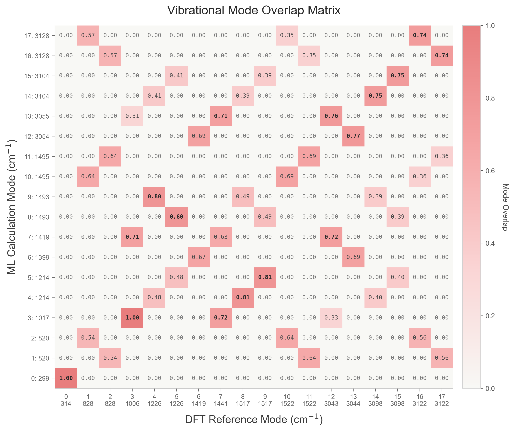
Heatmap shows the overlap (dot product) between vibrational modes. Red = high overlap (modes match), Blue = weak overlap, White = no overlap (modes are orthogonal).
mace_mp_mace_ml
Statistical Metrics
Spectral Comparison
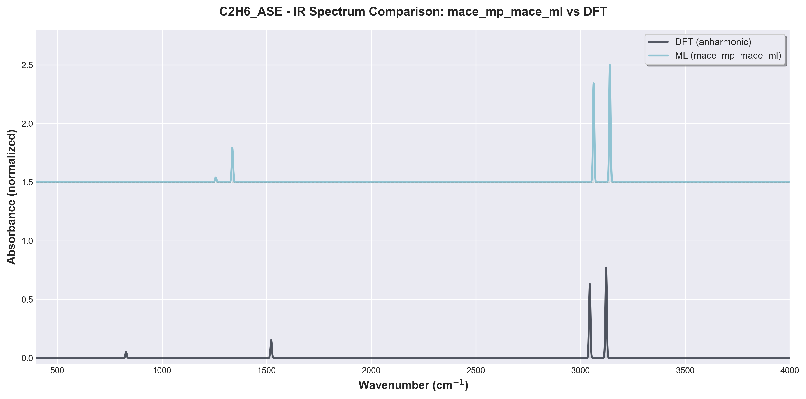
Regression Analysis
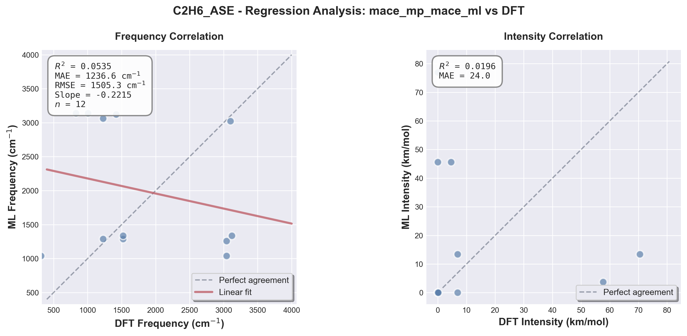
Detailed Frequency Comparison
Showing first 20 matched peaks (full table available in data/comparison_mace_mp_mace_ml.csv)
| DFT_Frequency_cm | ML_Frequency_cm | Freq_Difference_cm | Percent_Error | DFT_Intensity_km_mol | ML_Intensity_km_mol | Intensity_Difference |
|---|---|---|---|---|---|---|
| 313.56 | 1038.30 | 724.74 | 231.13 | 0.00 | 0.00 | 0.00 |
| 828.17 | 3140.19 | 2312.02 | 279.17 | 4.63 | 45.63 | 41.00 |
| 1006.05 | 3140.19 | 2134.14 | 212.13 | 0.00 | 45.64 | 45.64 |
| 1226.49 | 1287.45 | 60.96 | 4.97 | 0.00 | 0.00 | 0.00 |
| 1226.49 | 3062.57 | 1836.08 | 149.70 | 0.00 | 76.94 | 76.94 |
| 1419.05 | 3120.94 | 1701.89 | 119.93 | 0.15 | 0.00 | -0.15 |
| 1521.61 | 1336.33 | -185.28 | -12.18 | 6.89 | 13.43 | 6.54 |
| 1521.61 | 1288.51 | -233.10 | -15.32 | 6.89 | 0.00 | -6.89 |
| 3042.85 | 1038.65 | -2004.20 | -65.87 | 0.00 | 0.00 | 0.00 |
| 3044.03 | 1257.16 | -1786.87 | -58.70 | 57.66 | 3.74 | -53.92 |
| 3098.34 | 3023.89 | -74.45 | -2.40 | 0.00 | 0.00 | 0.00 |
| 3122.22 | 1336.33 | -1785.89 | -57.20 | 70.48 | 13.42 | -57.06 |
mace_omol_espaloma
Statistical Metrics
Spectral Comparison
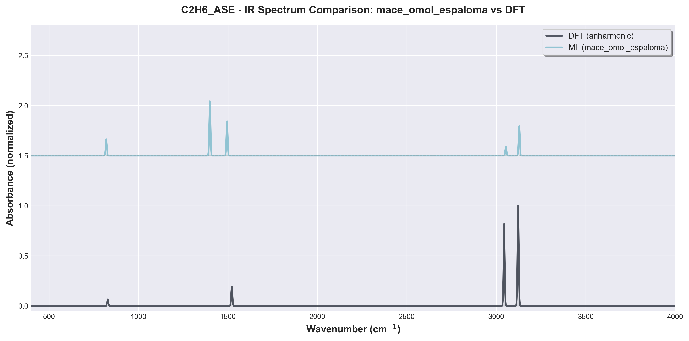
Regression Analysis
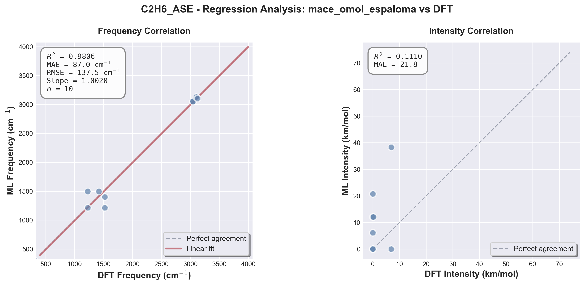
Detailed Frequency Comparison
Showing first 20 matched peaks (full table available in data/comparison_mace_omol_espaloma.csv)
| DFT_Frequency_cm | ML_Frequency_cm | Freq_Difference_cm | Percent_Error | DFT_Intensity_km_mol | ML_Intensity_km_mol | Intensity_Difference |
|---|---|---|---|---|---|---|
| 313.56 | 299.05 | -14.51 | -4.63 | 0.00 | 0.00 | 0.00 |
| 1226.49 | 1214.41 | -12.08 | -0.99 | 0.00 | 0.00 | 0.00 |
| 1226.49 | 1494.83 | 268.34 | 21.88 | 0.00 | 12.11 | 12.11 |
| 1419.05 | 1494.83 | 75.77 | 5.34 | 0.15 | 12.11 | 11.96 |
| 1521.61 | 1214.41 | -307.20 | -20.19 | 6.89 | 0.00 | -6.89 |
| 1521.61 | 1399.17 | -122.44 | -8.05 | 6.89 | 38.33 | 31.44 |
| 3042.85 | 3054.03 | 11.18 | 0.37 | 0.00 | 6.18 | 6.18 |
| 3044.03 | 3054.65 | 10.61 | 0.35 | 57.66 | 0.00 | -57.66 |
| 3098.34 | 3128.26 | 29.92 | 0.97 | 0.00 | 20.81 | 20.81 |
| 3122.22 | 3104.03 | -18.19 | -0.58 | 70.48 | 0.00 | -70.48 |
mace_mp_espaloma
Statistical Metrics
Spectral Comparison
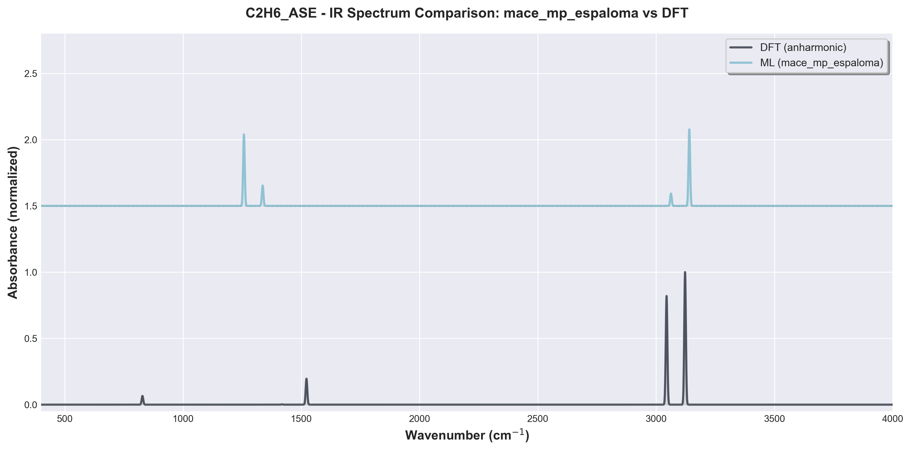
Regression Analysis
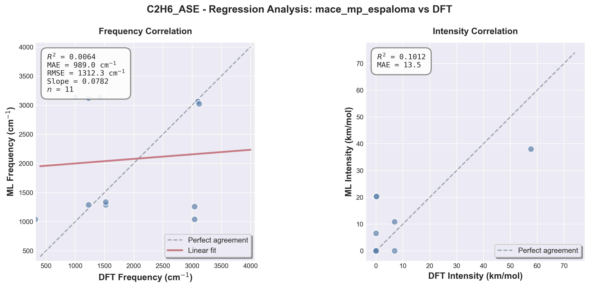
Detailed Frequency Comparison
Showing first 20 matched peaks (full table available in data/comparison_mace_mp_espaloma.csv)
| DFT_Frequency_cm | ML_Frequency_cm | Freq_Difference_cm | Percent_Error | DFT_Intensity_km_mol | ML_Intensity_km_mol | Intensity_Difference |
|---|---|---|---|---|---|---|
| 313.56 | 1038.30 | 724.74 | 231.13 | 0.00 | 0.00 | 0.00 |
| 1006.05 | 3140.19 | 2134.14 | 212.13 | 0.00 | 20.34 | 20.34 |
| 1226.49 | 1287.45 | 60.96 | 4.97 | 0.00 | 0.00 | 0.00 |
| 1226.49 | 3120.94 | 1894.45 | 154.46 | 0.00 | 0.00 | 0.00 |
| 1419.05 | 3140.19 | 1721.14 | 121.29 | 0.15 | 20.34 | 20.19 |
| 1521.61 | 1336.33 | -185.28 | -12.18 | 6.89 | 10.85 | 3.96 |
| 1521.61 | 1288.51 | -233.10 | -15.32 | 6.89 | 0.00 | -6.89 |
| 3042.85 | 1038.65 | -2004.20 | -65.87 | 0.00 | 0.00 | 0.00 |
| 3044.03 | 1257.16 | -1786.87 | -58.70 | 57.66 | 37.98 | -19.68 |
| 3098.34 | 3062.57 | -35.77 | -1.15 | 0.00 | 6.53 | 6.53 |
| 3122.22 | 3023.89 | -98.33 | -3.15 | 70.48 | 0.00 | -70.48 |
mace_omol_mace_ml
Statistical Metrics
Spectral Comparison
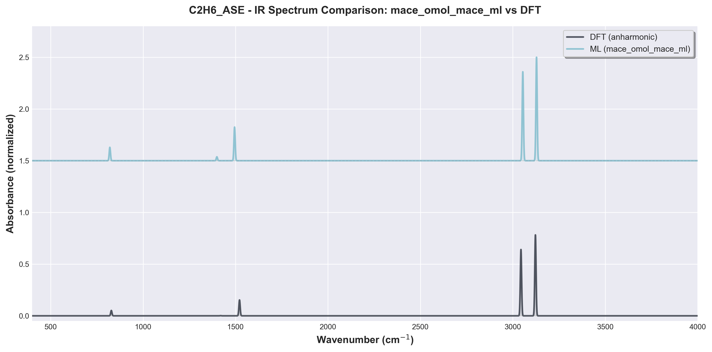
Regression Analysis
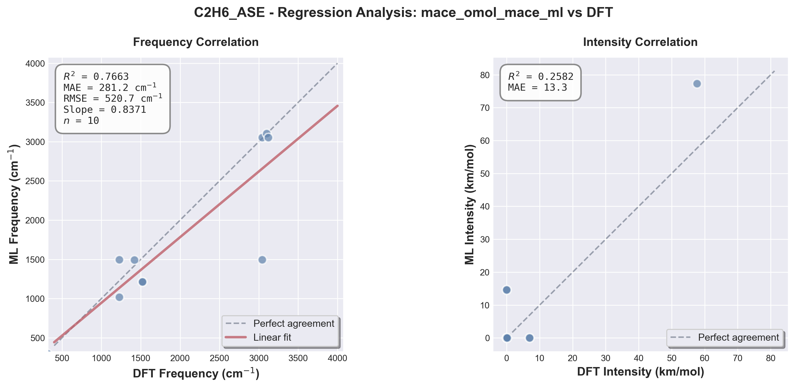
Detailed Frequency Comparison
Showing first 20 matched peaks (full table available in data/comparison_mace_omol_mace_ml.csv)
| DFT_Frequency_cm | ML_Frequency_cm | Freq_Difference_cm | Percent_Error | DFT_Intensity_km_mol | ML_Intensity_km_mol | Intensity_Difference |
|---|---|---|---|---|---|---|
| 313.56 | 299.05 | -14.51 | -4.63 | 0.00 | 0.00 | 0.00 |
| 1226.49 | 1017.07 | -209.42 | -17.07 | 0.00 | 0.00 | 0.00 |
| 1226.49 | 1494.83 | 268.34 | 21.88 | 0.00 | 14.62 | 14.62 |
| 1419.05 | 1493.13 | 74.08 | 5.22 | 0.15 | 0.00 | -0.15 |
| 1521.61 | 1214.41 | -307.20 | -20.19 | 6.89 | 0.00 | -6.89 |
| 1521.61 | 1214.41 | -307.20 | -20.19 | 6.89 | 0.00 | -6.89 |
| 3042.85 | 1494.83 | -1548.02 | -50.87 | 0.00 | 14.63 | 14.63 |
| 3044.03 | 3054.03 | 9.99 | 0.33 | 57.66 | 77.31 | 19.65 |
| 3098.34 | 3104.03 | 5.69 | 0.18 | 0.00 | 0.00 | 0.00 |
| 3122.22 | 3054.65 | -67.57 | -2.16 | 70.48 | 0.00 | -70.48 |
Summary Comparison
| Calculator | R^2 | MAE (cm^-1) | RMSE (cm^-1) | Max Error (cm^-1) | Matched Modes | Match Rate | Speedup |
|---|---|---|---|---|---|---|---|
| mace_mp_mace_ml | 0.0535 | 1236.63 | 1505.27 | 2312.02 | 12/14 | 85.7% | 4.0x |
| mace_omol_espaloma | 0.9806 | 87.02 | 137.45 | 307.20 | 10/14 | 71.4% | 3.3x |
| mace_mp_espaloma | 0.0064 | 989.00 | 1312.32 | 2134.14 | 11/14 | 78.6% | 4.4x |
| mace_omol_mace_ml | 0.7663 | 281.20 | 520.71 | 1548.02 | 10/14 | 71.4% | 2.7x |